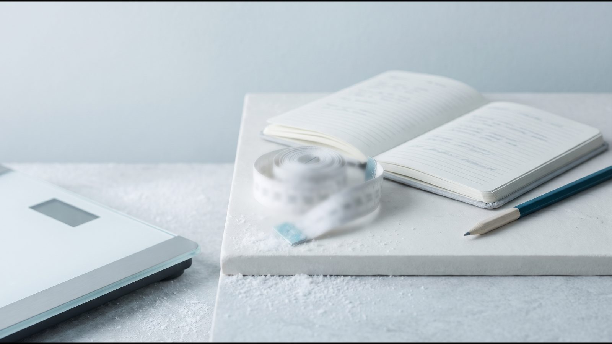

Как начать худеть правильно: чек-лист первой недели от эндокринолога

Начать худеть за 7 дней: что сделать в первую очередь
Как начать худеть правильно: за первую неделю оцените своё состояние, поставьте реалистичную цель, измените 2–3 привычки в питании и движении и решите, нужен ли вам врач. Жёсткие ограничения на старте не нужны: руководство NICE NG246 (2025) советует не садиться на несбалансированные диеты, потому что в долгосрочной перспективе они неэффективны и могут навредить. Ниже — план похудения для начинающих по дням.
- День 1. Встать на весы утром, измерить талию, рассчитать индекс массы тела (ИМТ) и отношение талии к росту.
- День 2. Записать симптомы, давление (если есть тонометр) и все лекарства, которые вы принимаете.
- День 3. Сформулировать цель на 3 месяца: вес, показатели здоровья и ежедневные действия.
- День 4. Составить обед и ужин по методу тарелки, убрать сладкие напитки.
- День 5. Посчитать свои обычные шаги и добавить ежедневную прогулку.
- День 6. Собрать анализы за последний год и список диагнозов и лекарств.
- День 7. Решить по критериям ниже: дальше самостоятельно или к эндокринологу.
День 1–2: измерить ИМТ, талию и самочувствие
С чего начать похудение? С цифр: ИМТ равен весу в килограммах, делённому на квадрат роста в метрах: например, 70 кг / (1,75 м)² = 22,9. По ВОЗ, у взрослых ИМТ от 25 означает избыточную массу тела, от 30 — ожирение. Но ИМТ не отличает жир от мышц, поэтому NICE NG246 советует оценивать его вместе с окружностью талии.
Как измерить талию дома (по NICE и протоколу ВОЗ):
- Найдите сбоку нижний край рёбер и верхний край тазовой кости.
- Оберните ленту посередине между ними, обычно чуть выше пупка, спокойно выдохните и снимите показание.
- Повторите замер; если результаты различаются не больше чем на 1 см, возьмите среднее.
- Разделите окружность талии на рост в тех же единицах: 96,5 см / 170 см = 0,57.
Отношение от 0,5 NICE связывает с повышенным риском диабета 2 типа, гипертензии и сердечно-сосудистых болезней, от 0,6 — с ещё более высоким. Талия должна быть меньше половины роста (ориентир NICE для людей с ИМТ до 35). Оба показателя сразу считает калькулятор ИМТ и талии.
Симптомы записывайте с датами. Среди признаков «клинического ожирения», то есть уже нарушающего работу органов, Комиссия Lancet (2025) называет одышку, остановки дыхания во сне, стойкие отёки ног (лимфедему), сильную боль в коленях или тазобедренных суставах, редкие менструации, ограничения в повседневных делах.
| Показатель | Как измерить | На что обратить внимание |
|---|---|---|
| Вес | Утром, до завтрака, на тех же весах | Тенденция, а не одно число |
| ИМТ | Вес (кг) / рост² (м) | 25–29,9: избыточная масса; от 30: ожирение (ВОЗ) |
| Окружность талии | Между ребром и тазовой костью, на выдохе | От 94 см у мужчин и 80 см у женщин европейского происхождения: центральное ожирение (IDF, 2006) |
| Талия / рост | Талию разделить на рост | От 0,5: выше риски (NICE NG246) |

День 3: поставить цель по здоровью, а не только в килограммах
Снижение веса на 5–10 % уже может улучшить здоровье (NHS), а по CDC даже умеренное похудение помогает улучшить давление, холестерин и сахар крови. В программе DPP (NEJM, 2002) скромная цель, 7 % веса и 150 минут активности в неделю, дала людям с нарушенной регуляцией глюкозы на 58 % меньше новых случаев диабета 2 типа, чем плацебо.
По рекомендации экспертов, которую приводит NIDDK, первая цель — 5–10 % исходного веса за 6 месяцев. Цель на 3 месяца удобно разложить на три части:
- вес: например, минус 5 % (для 90 кг это 4,5 кг) и меньше талия;
- действия: ежедневные шаги, овощи на половину тарелки, сладкие напитки только изредка;
- здоровье: давление, глюкозу или липиды, если они были вне нормы, перепроверить вместе с врачом.
День 4–5: питание и движение без жёстких диет
Гарвардский метод тарелки не требует считать калории: части тарелки не привязаны к калорийности. Половину занимают овощи и фрукты (картофель не считается), четверть — цельнозерновые продукты, ещё четверть — рыба, птица, бобовые или орехи, а пить лучше воду, чай или кофе без сахара. По режиму: в небольшом исследовании Vujović (Cell Metabolism, 2022) поздняя еда при тех же калориях усиливала голод, поэтому основную еду, возможно, лучше не оставлять на вечер. Принципы и пример меню есть в статье питание для похудения.
Движение начните с шагов. В метаанализе Paluch (Lancet Public Health, 2022) риск смерти снижался с ростом числа шагов до плато: 8 000–10 000 в день у людей до 60 лет, 6 000–8 000 — от 60 (это связь, а не доказанная причина). ВОЗ (2020) советует взрослым 150–300 минут умеренной активности в неделю.
Диеты на 800–1 200 ккал NICE NG246 допускает лишь кратковременно и в специализированной службе, предупреждая о повторных циклах похудения и набора веса; к тому же быстрое похудение может повышать риск желчных камней (NIDDK). Тезис «быстро ушло — быстро вернётся» исследование Purcell (Lancet Diabetes Endocrinol, 2014) не подтвердило: среди похудевших минимум на 12,5 % доля веса, возвращённого за 144 недели, была одинаковой, около 71 %.
День 6: анализы и состояния, которые стоит проверить
Перечень анализов определяет врач. EASO в рекомендациях для первичного звена (Obesity Facts, 2019) самыми важными называет глюкозу натощак, липидограмму, печёночные пробы (АЛТ, АСТ, ГГТ) и креатинин; дальше идут ТТГ (гормон, по которому оценивают щитовидную железу) и другие исследования, часть — только по показаниям.
Сниженная функция щитовидной железы (гипотиреоз) может добавлять несколько килограммов, в основном воды и соли (Американская тиреоидная ассоциация). Endocrine Society (2015) связывает набор веса, в частности, с глюкокортикоидами, инсулином, частью антидепрессантов, антипсихотиков и противосудорожных препаратов. Не отменяйте лекарства сами, а обсудите вес с врачом, который их назначил; подробнее в статье вес стоит на месте.
День 7: самостоятельно или с врачом — как решить
NICE NG246 и Endocrine Society ставят изменения питания и активности на первое место, а медицинское лечение добавляют к ним. Сопутствующие болезни NICE советует лечить сразу, не дожидаясь похудения.
Когда достаточно изменить образ жизни
Начать самостоятельно разумно, если ИМТ в пределах 25–29,9, талия меньше половины роста и нет диабета, преддиабета, повышенного давления, нарушений липидов или апноэ сна. NHS советует идти к врачу, когда ИМТ выше нормы и при этом талия больше половины роста. Если через 3 месяца записи не изменились, покажитесь врачу, а не урезайте калории ещё сильнее.
Когда обсудить медицинское лечение
Лучше сразу записаться к эндокринологу, если есть хотя бы один из признаков:
- ИМТ от 30 или от 27 вместе с болезнью, связанной с весом: с таких порогов Endocrine Society (2015) советует рассматривать медикаментозное лечение;
- диабет 2 типа, преддиабет, повышенное давление, нарушения липидов, апноэ сна;
- несколько попыток похудеть, после которых вес возвращался;
- симптомы из второго дня: одышка, остановки дыхания во сне, боль в суставах, нарушения цикла.
Трудно контролируемые эпизоды переедания — тоже повод поговорить с врачом; признаки — в статье постоянно хочется есть.
[КОММЕНТАРИЙ ВРАЧА: 2–3 предложения эндокринолога (ФИО) о том, при каких признаках на первой неделе лучше не откладывать консультацию и что врач оценивает на первой встрече]
Как начать худеть после 40 и при большом весе
У женщин после 40 на первый план выходит менопаузальный переход: в исследовании SWAN (JCI Insight, 2019) в его начале скорость накопления жира удваивалась, а безжировая масса уменьшалась, хотя вес рос так же равномерно, как и раньше. Поэтому после 40 следите за талией и берегите мышцы: силовые упражнения минимум 2 дня в неделю (ВОЗ, 2020), а в старшем возрасте — упражнения на равновесие и силу 3 дня и больше.
При большом весе и боли в коленях или тазобедренных суставах нагрузку наращивают постепенно, начиная с ходьбы; вид активности лучше согласовать с врачом.
Частые вопросы
Сколько килограммов в неделю безопасно сбрасывать?
NHS советует 0,5–1 кг в неделю. Правило «минус 500–600 ккал в день дают минус 0,5 кг в неделю» завышает прогноз, и чем дольше, тем больше ошибка: в примере Hall (Lancet, 2011) при дефиците около 480 ккал в сутки оно обещает 22 кг за первый год, примерно вдвое больше, чем модель, потому что меньшему телу нужно меньше энергии. Свой срок можно прикинуть в калькуляторе срока похудения.
Обязательно ли идти к врачу, чтобы начать худеть?
Нет, если ИМТ ниже 30, талия меньше половины роста и нет болезней, связанных с весом. При диабете, повышенном давлении, апноэ сна, очень большом весе или если вес возвращается после каждой попытки лучше начать с консультации.
Можно ли начать без спорта?
Да: вес снижает прежде всего дефицит энергии, на нём NICE NG246 строит все диетические подходы. Движение нужно, чтобы удержать результат: по NICE, людям, похудевшим после ожирения, может понадобиться 60–90 минут активности в день.
С чего начать, если вес очень большой?
С измерений и консультации врача, а не с жёсткой диеты. При ИМТ от 40 или от 35 с серьёзной сопутствующей болезнью NICE NG246 предусматривает оценку всех вариантов лечения, вплоть до бариатрической операции.
Что дальше
Не уверены, как начать худеть правильно именно в вашем случае? Пройдите тест на похудение или запишитесь на бесплатную онлайн-консультацию эндокринолога Avelis.
Источники
- WHO. Obesity and overweight. Fact sheet, 2026. https://www.who.int/news-room/fact-sheets/detail/obesity-and-overweight
- NICE. Overweight and obesity management (NG246), 2025, updated 2026. https://www.nice.org.uk/guidance/ng246
- WHO. Waist circumference and waist–hip ratio: report of a WHO expert consultation, 2008 (publ. 2011). https://iris.who.int/handle/10665/44583
- International Diabetes Federation. The IDF consensus worldwide definition of the metabolic syndrome, 2006. https://idf.org/media/uploads/2023/05/attachments-30.pdf
- Rubino F et al. Definition and diagnostic criteria of clinical obesity. Lancet Diabetes Endocrinol, 2025. https://doi.org/10.1016/S2213-8587(24)00316-4
- NHS. Overweight and obesity in adults, 2026. https://www.nhs.uk/conditions/overweight-and-obesity/
- CDC. Losing Weight, 2025. https://www.cdc.gov/healthy-weight-growth/losing-weight/index.html
- Knowler WC et al. (DPP). Reduction in the incidence of type 2 diabetes with lifestyle intervention or metformin. N Engl J Med, 2002. https://doi.org/10.1056/NEJMoa012512
- NIDDK. Choosing a Safe & Successful Weight-loss Program, 2024. https://www.niddk.nih.gov/health-information/weight-management/choosing-a-safe-successful-weight-loss-program
- Harvard T.H. Chan School of Public Health. Healthy Eating Plate. https://nutritionsource.hsph.harvard.edu/healthy-eating-plate/
- Vujović N et al. Late isocaloric eating increases hunger, decreases energy expenditure, and modifies metabolic pathways in adults with overweight and obesity. Cell Metab, 2022. https://doi.org/10.1016/j.cmet.2022.09.007
- Paluch AE et al. Daily steps and all-cause mortality: a meta-analysis of 15 international cohorts. Lancet Public Health, 2022. https://doi.org/10.1016/S2468-2667(21)00302-9
- Bull FC et al. World Health Organization 2020 guidelines on physical activity and sedentary behaviour. Br J Sports Med, 2020. https://doi.org/10.1136/bjsports-2020-102955
- NIDDK. Dieting & Gallstones. https://www.niddk.nih.gov/health-information/digestive-diseases/gallstones/dieting
- Purcell K et al. The effect of rate of weight loss on long-term weight management: a randomised controlled trial. Lancet Diabetes Endocrinol, 2014. https://doi.org/10.1016/S2213-8587(14)70200-1
- Durrer Schutz D et al. European Practical and Patient-Centred Guidelines for Adult Obesity Management in Primary Care (EASO). Obes Facts, 2019. https://pmc.ncbi.nlm.nih.gov/articles/PMC6465693/
- American Thyroid Association. Thyroid and Weight. https://www.thyroid.org/thyroid-and-weight/
- Apovian CM et al. Pharmacological management of obesity: an Endocrine Society clinical practice guideline. J Clin Endocrinol Metab, 2015. https://doi.org/10.1210/jc.2014-3415
- Greendale GA et al. Changes in body composition and weight during the menopause transition (SWAN). JCI Insight, 2019. https://doi.org/10.1172/jci.insight.124865
- Hall KD et al. Quantification of the effect of energy imbalance on bodyweight. Lancet, 2011. https://doi.org/10.1016/S0140-6736(11)60812-X
Материал носит информационный характер и не заменяет консультацию врача. Препараты назначает врач после консультации.
Читайте также